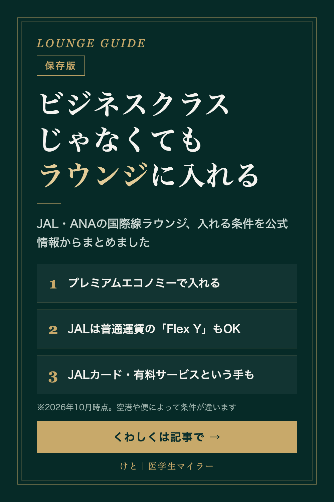

LOUNGE GUIDE
ビジネスクラス以外でJAL・ANAの国際線ラウンジに入る方法
2026/10/03 時点の情報
航空会社のラウンジは、ビジネスクラスや上級会員だけのもの、と思われがちです。でも実は、ほかにも入る方法があります。JALとANAの国際線ラウンジに入れる条件を、各社とJALカードの公式情報からまとめました。

1. プレミアムエコノミーで入る
JALは、国際線のプレミアムエコノミーでサクララウンジを利用できます。ただし、空港や搭乗便によっては利用条件があります。
ANAは、羽田空港の国際線ラウンジの案内で、ANAグループ運航便をプレミアムエコノミーで利用する人が「ANA LOUNGE」の対象になっています（羽田以外の空港は、各空港のページで確認してください）。
2. JALは普通運賃のエコノミー「Flex Y」でも入れる
JALでは、割引なしの普通運賃のエコノミー「Flex Y」でもサクララウンジを利用できます。プレミアムエコノミーと同じく、空港や便による条件があります。
注意点として、JALの国際線をビジネスクラス・プレミアムエコノミー・エコノミーで利用してラウンジに入る場合、同行者は一緒に入れません。
3. JALカードを使う
| 仕組み | 条件 | 使える回数 |
|---|---|---|
| JMB elite | 対象のJALカード本会員で、Life Statusポイントが250以上。特典の申し込みが必要 | 年2回（国内線または国際線） |
| JMB elite plus | JMB eliteの上位 | 年6回 |
| JAL CLUB EST | 20代向けのJALカード | 国内線のサクララウンジが年5回（国際線は対象外） |
| JAL・JCBカード プラチナ Pro | カード本会員 | 国内線か国際線を年1回（家族会員・同行者は不可） |
JMB eliteの対象カードは、プラチナPro、プラチナ、JALダイナースカード、CLUB-Aゴールドカード、CLUB-Aカードです。
4. どれにも当てはまらなければ、有料で
JALは、上の資格がなくても有料でサクララウンジを利用できます。ANAも、成田・羽田・ホノルルの国際線「ANA LOUNGE」を有料で利用できるサービスがあります。料金や条件は空港によって違うので、公式サイトで確認してください。
まとめ
- プレミアムエコノミーなら、JALもANA（羽田国際線）もラウンジの対象
- JALは普通運賃のエコノミー「Flex Y」でも入れる。ただし同行者は不可
- JALカードを持っていると、条件次第で年に数回使える
- どれも無ければ有料サービス
プレミアムエコノミーは、座席だけでなくラウンジも含めて考えると、選ぶ理由が増えます。
※2026年10月3日時点の各社公式サイト・JALカード公式の情報をもとにしています。空港や便によって条件が違うことがあるので、出発前に必ず公式サイトで確認してください。